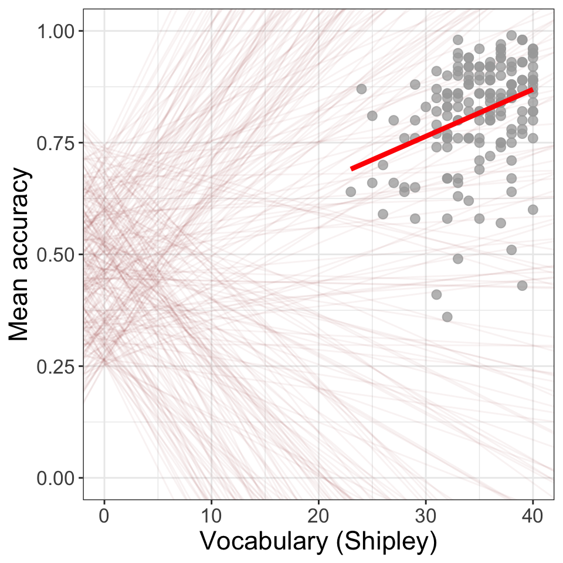
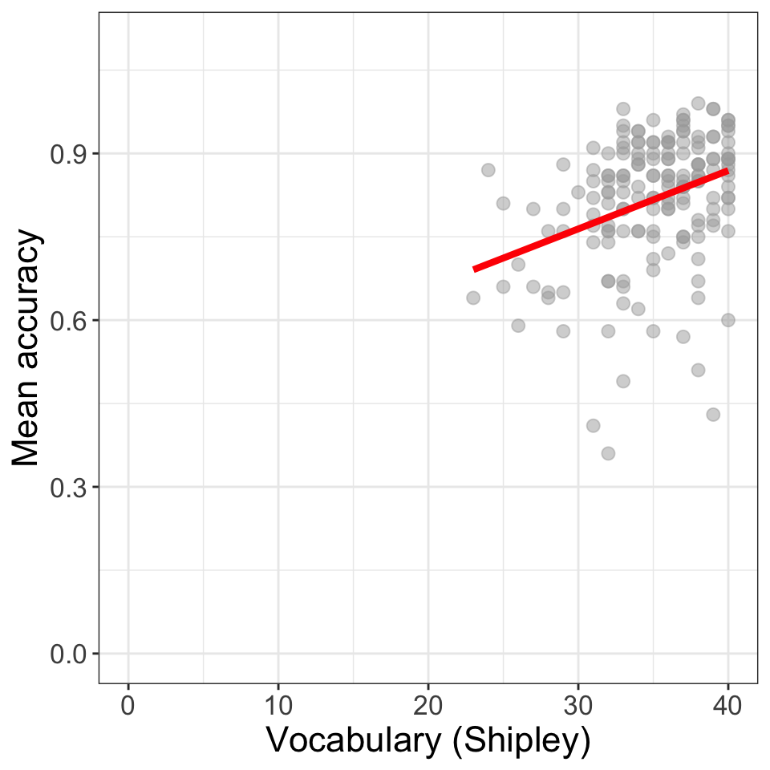
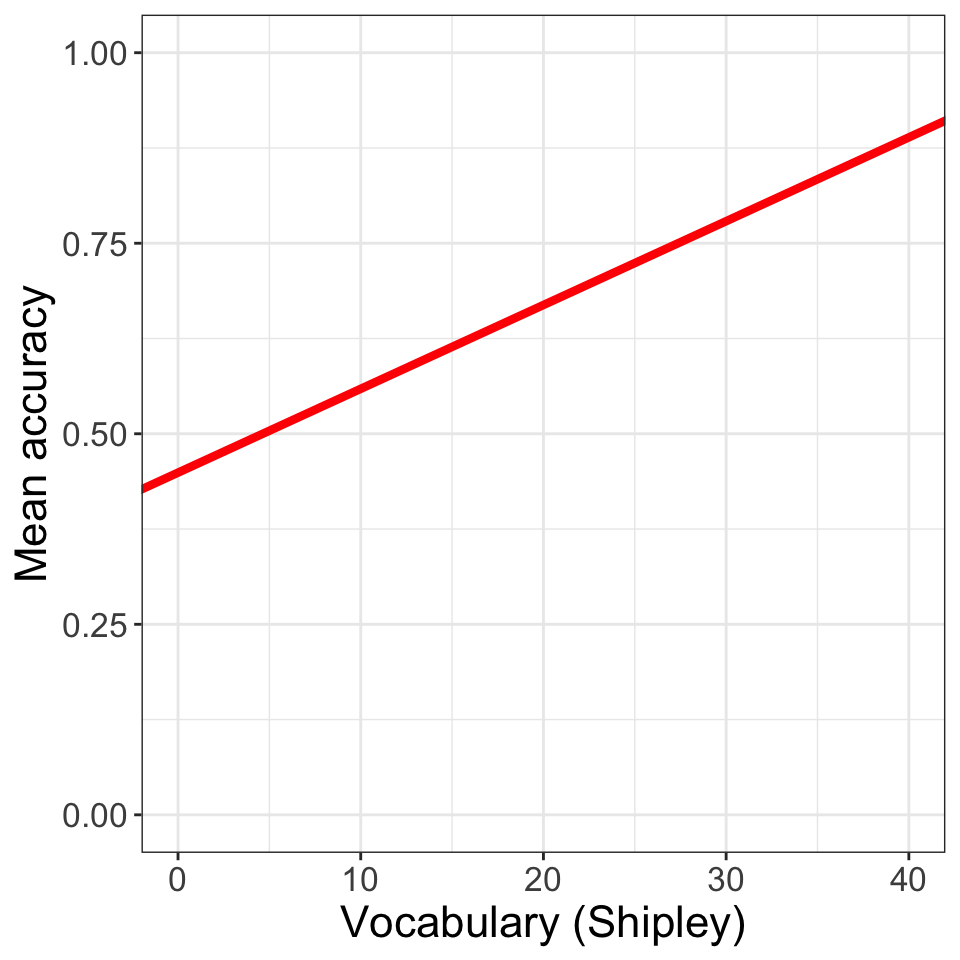
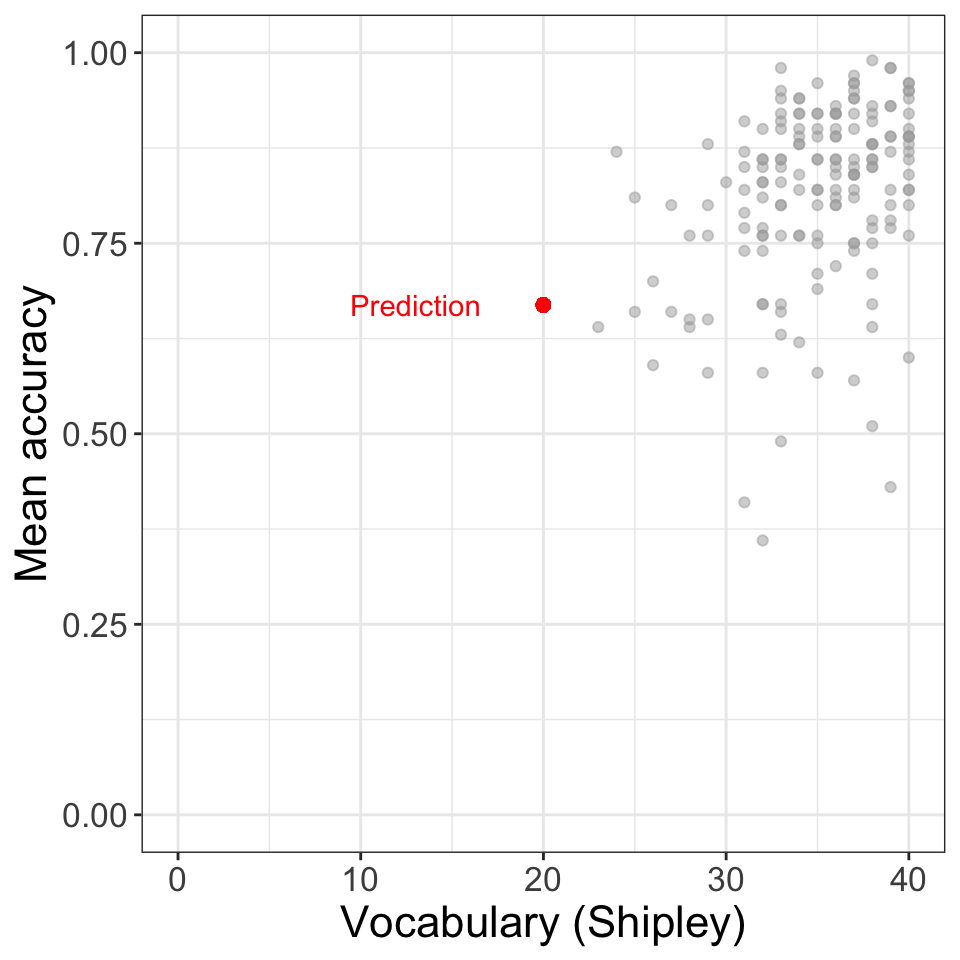
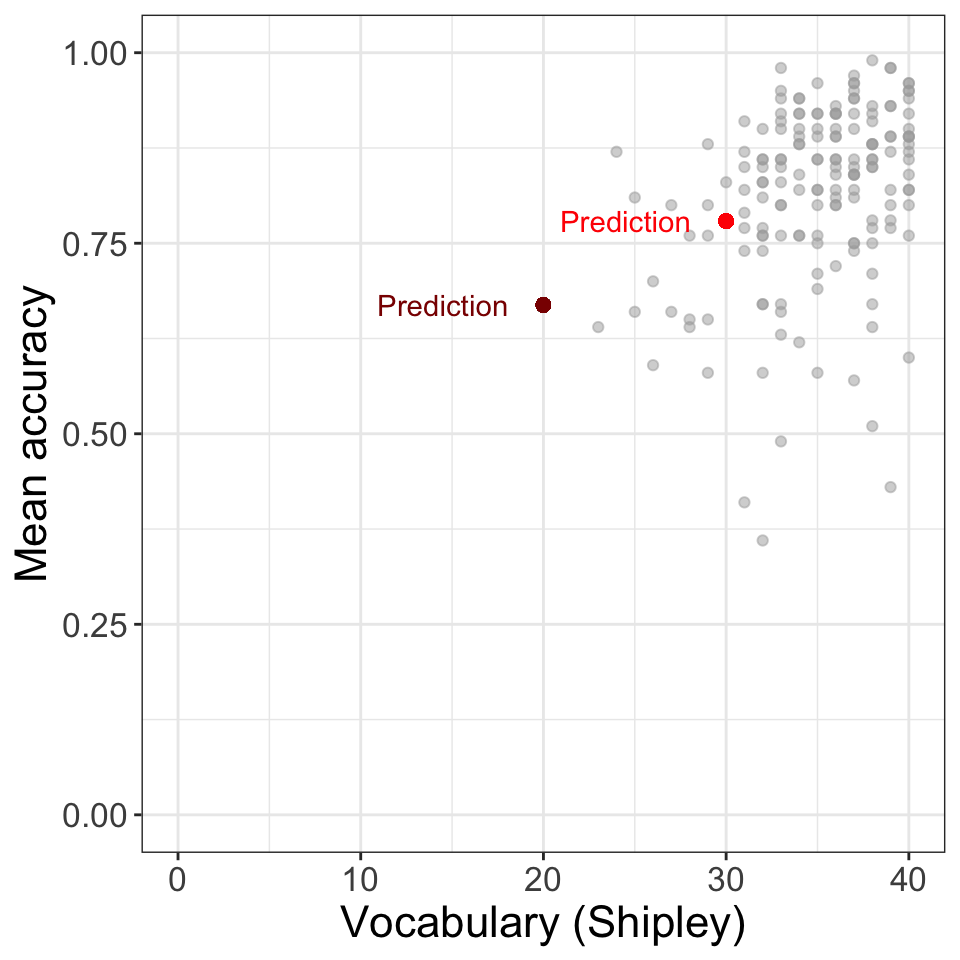
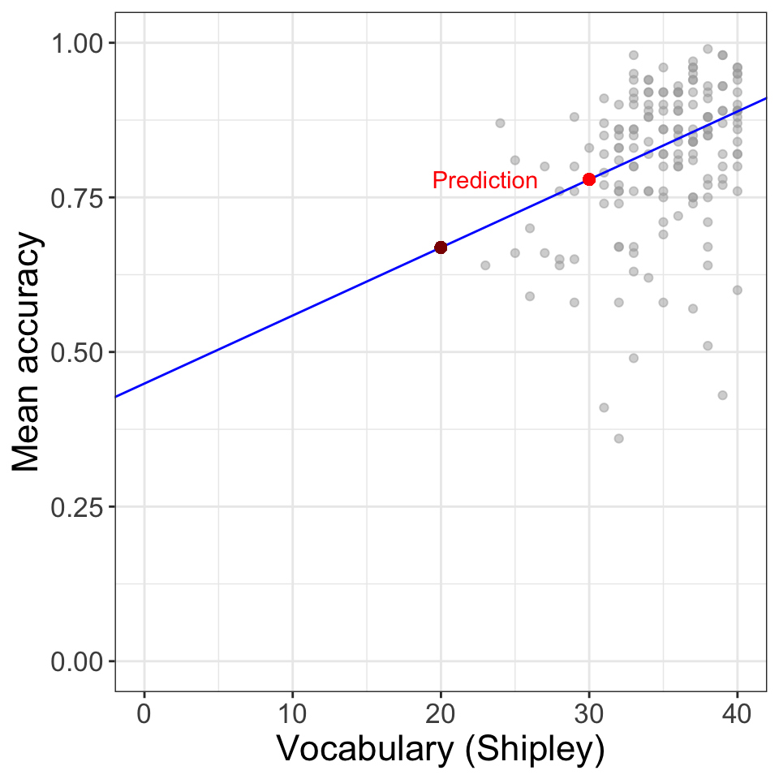
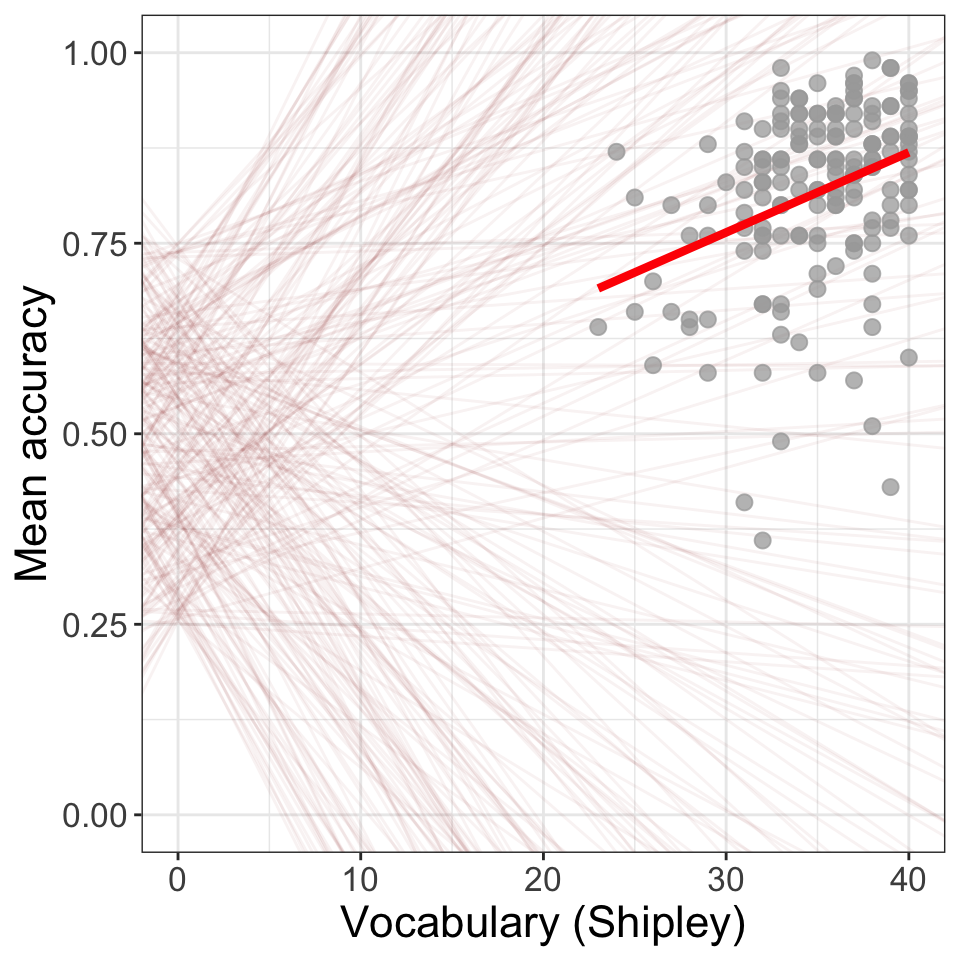
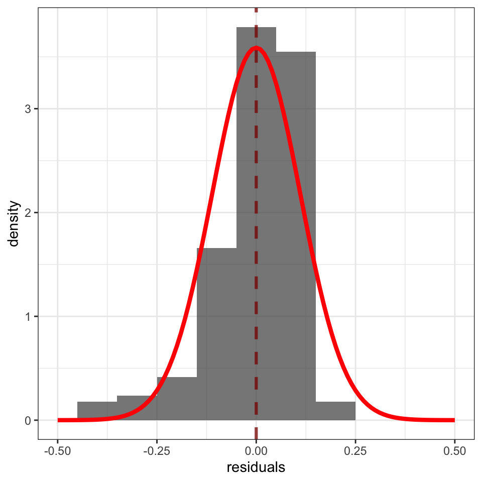
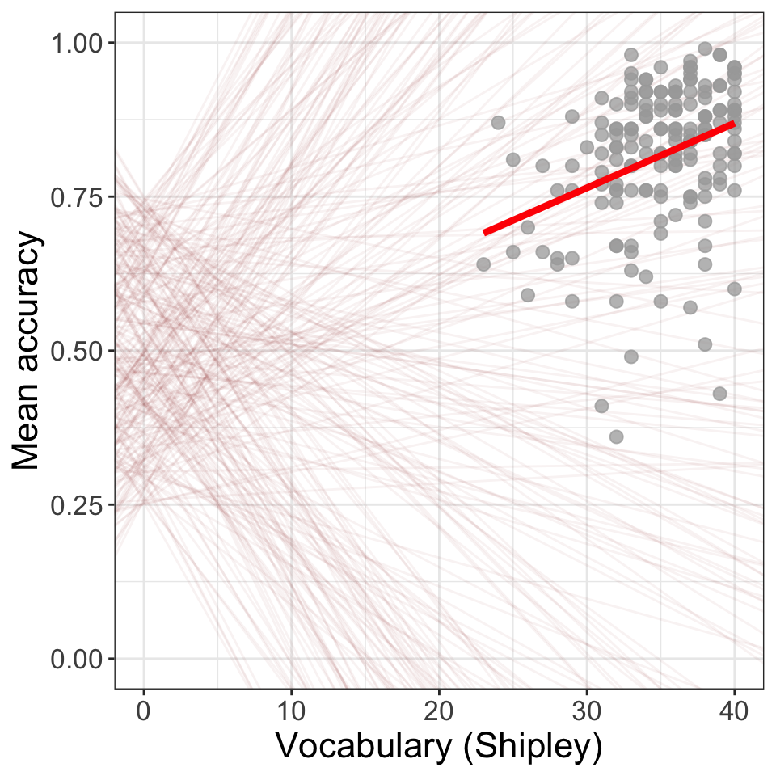

| participant_ID | mean.acc | mean.self | study | AGE | SHIPLEY | HLVA | FACTOR3 | QRITOTAL | GENDER | EDUCATION | ETHNICITY |
|---|---|---|---|---|---|---|---|---|---|---|---|
| studytwo.1 | 0.4107143 | 6.071429 | studytwo | 26 | 27 | 6 | 50 | 9 | Female | Higher | Asian |
| studytwo.10 | 0.6071429 | 8.500000 | studytwo | 38 | 24 | 9 | 58 | 15 | Female | Secondary | White |
| studytwo.100 | 0.8750000 | 8.928571 | studytwo | 66 | 40 | 13 | 60 | 20 | Female | Higher | White |
| studytwo.101 | 0.9642857 | 8.500000 | studytwo | 21 | 31 | 11 | 59 | 14 | Female | Higher | White |
| studytwo.102 | 0.7142857 | 7.071429 | studytwo | 74 | 35 | 7 | 52 | 18 | Male | Higher | White |
| studytwo.103 | 0.7678571 | 5.071429 | studytwo | 18 | 40 | 11 | 54 | 15 | Female | Further | White |
5 Introduction to the linear model
5.1 Overview
Welcome to our overview of the materials you will work with in our class introducing you to the linear model in PSYC401 Week 9.
We will return to locate our learning in the context of the Clearly understood project. We will present our PSYC401 lessons in the context of this research project because we think that this context will help you to make sense of the data (as we explain in Chapter 1).
Remember: it is unclear how to make health communication more effective. The problem is that we are not sure how health information should be communicated so that everyone can understand it. This is why we ask the research questions:
- What person attributes predict success in understanding?
- Can people accurately evaluate whether they correctly understand written health information?
As we work together, we will be revisiting some of the ideas and techniques you have seen in previous classes. This is to give you the opportunity to consolidate your learning. We will be extending your development with some new ideas to strengthen your skills.
You can read a bit more about the project and the project data in Chapter 1.
5.2 Our learning goals
This week, we focus on learning how to predict people: predicting observations about us (e.g., our attributes) or about the things we make or do. To do this, we will learn to think about and work with linear models.
Our learning objectives: — what are we learning about?
5.2.1 Using the linear model to answer research questions
- We will learn how to:
- code linear models
- identify and interpret model statistics
- critically evaluate the results
- communicate the results
- Because we often want to know about relationships, asking questions like:
- Does variation in X predict variation in Y?
- What are the factors that influence outcome Y?
- Is a theoretical model consistent with observed behaviour?
5.3 Learning resources
You will see in the next section links to the lectures we created both to explain the concepts we want to help you to learn about, and to explain the practical data analysis skills we want to help you to develop (Section 5.3.1). We then share links to information about the practical materials we have provided to help you to practise those skills (Section 5.3.2).
All the links to the lecture videos, the lecture slides, and everything you need for your practical work can also be found in the Week 9 files folder on Moodle here
In Section 5.4, we present the lecture slide points.
Tip
Linked resources include:
- In Chapter 1, we present an overview of the materials we have shared to support your development of critical thinking in relation to associations, and to support your learning about conducting correlation-based analyses of associations.
- It may help you to revise these materials.
5.3.1 Lectures
The lecture material for this week is presented in four short parts. Click on a link and your browser should open a tab showing the Panopto video for the lecture part.
You can download the slides we presented in the lecture in two different formats, depending on what you think will be most useful to you:
- Download the slides exactly as they appear in the lecture from this link. The .html file can be opened and viewed in any web browser (e.g., Chrome, Firefox, Safari).
- Or you can download a printable Word .docx presentation of the slides from this link. The .docx can be opened in Microsoft Word. The figures will not appear exactly as they do in the lecture recording because Word cannot cope with images so well but the trade-off is that you get a document you can print and edit to add notes.
5.3.2 Practical materials
We have collected the practical materials together into a folder.
The folder includes the data files:
study-one-general-participants.csvstudy-two-general-participants.csv
and .R code files:
401-lm-intro-how-to.R401-lm-intro-workbook.R
You will use these files for your practical learning.
You can download the .R files and the data .csv files in a single folder, using the link here.
Or you can download the files as individual files from the module Moodle page for PSYC401.
Once you have downloaded the file folder, you will need to upload it to the R-Studio server to access and use the R files.
5.3.2.1 The how-to guide
In the how-to guide:
401-lm-intro-how-to.R
we show you how to do everything you need to do in the practical workbook (see Section 5.3.3). The guide comprises an .R file 401-lm-intro-how-to.R with code and advice.
The code in the .R file was written to work with the data file
study-one-general-participants.csv.
Tip
Work through the steps in the
how-toguide first, this practice will help you to understand what you need to do for theworkbooktasks.The
how-toguide and theworkbookhave similar structures. This is intentional: so that you can copy and adapt code from thehow-toguide to do the practical tasks in theworkbook.
5.3.3 The workbook
In the workbook:
401-lm-intro-workbook.R
you will work with the data file
study-two-general-participants.csv
We split .R scripts into parts, tasks and questions.
For this class on linear models, our practical materials have two aims:
- Helping you to learn how to use linear models to address questions about associations, questions like “What person attributes predict success in understanding?”;
- Helping you to learn how to interpret linear model results, including how to work with data visualizations displaying distributions or associations.
We progress a series of parts, each designed to enable learning or developing concepts or skills:
- Part 3 refreshes your development of skills for working with histogram-based visualizations of data distributions. Here, we are aiming to advance your skills so that you can develop nicer looking histograms that present more accurate accounts of distributions (by showing the full range of potential values), and so that you can annotate histograms to direct the attention of your audience as we discuss in 3.
- Part 4 helps you to learn how you can present grids of histograms for easy comparison of variable distributions.
- Part 5 refreshes your development of skills for working with scatterplot-based visualizations of associations or of the relationships between two or more numeric variables. We look at how you can edit the appearance of the plots, element by element. And we look at how you can produce grids of scatterplots, again, to enable comparisons — here, of the potential relationships between one outcome and multiple other variables.
- Part 6 offers the opportunity to revise the calculation and interpretation of correlation analyses.
- Part 7 provides exercises designed to help you to learn how to conduct linear model analyses.
- Part 8 helps you to develop skills in calculating and presenting model predictions.
- Part 9 is optional and focuses on working with R-community information to find out how to annotate plots using
geom_vline()orgeom_hline().
The activity 401-lm-intro-workbook.R file takes you through the tasks, one by one.
If you are unsure about what you need to do, check the advice in 401-lm-intro-how-to.R.
You will see that you can match a task in the activity to the same task in the how-to. The how-to shows you what function you need and how you should write the function code. You will need to change the names of the data-set or the variables to complete the tasks in the activity.
5.3.4 The data files
Each of the data files we will work with has a similar structure.
Here are what the first few rows in the data file study-two-general-participants.csv looks like:
You can see the columns:
participant_IDparticipant codemean.accaverage accuracy of response to questions testing understanding of health guidancemean.selfaverage self-rated accuracy of understanding of health guidancestudyvariable coding for what study the data were collected inAGEage in yearsHLVAhealth literacy test scoreSHIPLEYvocabulary knowledge test scoreFACTOR3reading strategy survey scoreGENDERgender codeEDUCATIONeducation level codeETHNICITYethnicity (Office National Statistics categories) code
5.3.5 The answers
After the practical class, you will be able to download the answers version of the workbook here.
The answers version will present my answers for questions, and some extra information where that is helpful.
5.4 Lecture notes
Some people find it easier to read notes than to watch video recordings. This is why we also include the lecture notes here.
5.4.1 Week 9: Focus on the linear model

5.4.2 Analyze + visualize + present
5.4.3 The linear model: our aims
- Understand how to code:
lm(mean.acc ~ SHIPLEY) - To answer questions like: Is comprehension success influenced by vocabulary knowledge?

5.4.4 Using the linear model to answer research questions
- We will learn how to:
- code linear models
- identify and interpret model statistics
- critically evaluate the results
- communicate the results
5.4.5 Thinking about relationships in psychologial science
We often want to know about relationships
- Does variation in X predict variation in Y?
- What are the factors that influence outcome Y?
- Is a theoretical model consistent with observed behaviour?
5.4.6 Now consider our research aims in the context of the health comprehension project
- Because public health impacts depend on giving people information they can understand
- We want to know: What makes it easy or difficult to understand written health information?
5.4.7 Health comprehension project: questions and analyses
- We want to know: What makes it easy or difficult to understand written health information?
- So our research questions are:
- What person attributes predict success in understanding?
- Can people accurately evaluate whether they correctly understand written health information?
- These kinds of research questions can be answered using methods like linear models
5.4.8 Context: Individual differences theory of comprehension success
- Understanding text depends on (1.) language experience and (2.) reasoning ability (Freed et al., 2017)
5.4.9 The measurement context: Where the data come from
- We measure reading comprehension: asking people to read text and then answer multiple choice questions
- We measure background knowledge: vocabulary knowledge (Shipley); health literacy (HLVA)
5.4.10 Reflect: The kinds of critical evaluation questions you can ask yourself
- Are multiple choice questions good ways to probe understanding? What alternatives are there?
- Are tests like the Shipley good measures of language knowledge? What do we miss?
5.4.11 Reflect: As we move into thinking about the data analysis, we need to identify our assumptions
- validity: that differences in knowledge or ability cause differences in test scores
- measurement: that this is equally true across the different kinds of people we tested
- generalizability: that the sample of people we recruited looks like the population
5.4.12 We need to think about the derivation chain
5.4.13 Questions, assumptions, predictions
Link: concepts, questions \(\rightarrow\) assumptions \(\rightarrow\) testable predictions
- concepts, questions: Can people accurately understand health guidance? \(\rightarrow\)
- assumptions: People who know more about language should also present more accurate understanding \(\rightarrow\)
- testable predictions: Higher levels of vocabulary should be associated with higher levels of comprehension accuracy: we expect to estimate a positive coefficient
5.4.14 One way of thinking about the association is to visualize it
- For each value of the predictor vocabulary
- Does the the value of the outcome accuracy
- Increase or decrease?
5.4.15 Predicted association as expected change in average outcome
- Figure 5.6 shows the distribution curve of mean (comprehension) accuracy scores observed at each value of vocabulary
- You can see that the middle – the average – of each distribution increases
- as we go from left (low scores) to right (high scores) on vocabulary
![The figure presents a indicating the association between variables mean accuracy (on y-axis) and vocabulary (x-axis) scores. In the plot, the points are shown in dark red and clustered such that higher vocabulary scores tend to be associated with higher accuracy scores. Ridges are superimposed on the points, shown in dark grey and red. We show the distribution curve of mean (comprehension) accuracy scores observed at each value of vocabulary. You can see that the middle -- the average -- of each distribution increases as we go from left (low scores) to right (high scores).](lm-intro_files/figure-html/fig-scatterplot-ridges-shipley-acc-1-1.png)
5.4.16 How do we estimate the association between two variables?
- Specify the
lmfunction and the modelmean.acc ~ SHIPLEY - Specify what data we use
data = clearly.one.subjects - Get the results
summary(model)
5.4.17 The sentence structure of models in R
Take a good look:
lm(mean.acc ~ SHIPLEY ...)You will see this sentence structure in coding for many different analysis types
method(outcome ~ predictors)methodcould beaov, brm, lm, glm, glmm, lmer, t.test, cor.test
5.4.18 Results: How does the outcome vary in relation to the predictor?
model <- lm(mean.acc ~ SHIPLEY,
data = clearly.one.subjects)
summary(model)
Call:
lm(formula = mean.acc ~ SHIPLEY, data = clearly.one.subjects)
Residuals:
Min 1Q Median 3Q Max
-0.42871 -0.04921 0.02079 0.07480 0.18430
Coefficients:
Estimate Std. Error t value Pr(>|t|)
(Intercept) 0.44914 0.08053 5.577 9.67e-08 ***
SHIPLEY 0.01050 0.00229 4.585 8.85e-06 ***
---
Signif. codes: 0 '***' 0.001 '**' 0.01 '*' 0.05 '.' 0.1 ' ' 1
Residual standard error: 0.1115 on 167 degrees of freedom
Multiple R-squared: 0.1118, Adjusted R-squared: 0.1065
F-statistic: 21.03 on 1 and 167 DF, p-value: 8.846e-06- A model summary gives us estimates of:
- The coefficient \(= 0.44914\) for the intercept
- The coefficient \(= 0.01050\) for the slope of the SHIPLEY ‘effect’
5.4.19 These coefficients build a line
- The line represents:
- our prediction for how the outcome varies on average
- given change in the predictor
5.4.20 So now we need to think about straight lines
- You may remember from school that to draw a straight line you need four numbers:
\[y = a + bx\]
- We calculate the height \(y\) by adding
- \(a\) the intercept, the value of y when \(x = 0\)
- to the product of \(b\) the coefficient for the slope of the line
- multiplied by \(x\) the value of the predictor variable
5.4.21 Let’s draw it
- Look at what we get if we draw the line using the linear model coefficients:
- \(= 0.449\) for the intercept, \(a\)
- \(= 0.011\) for the slope, \(b\)
- In the formula: \(y = 0.449 + 0.011x\)
- (I round the numbers to three decimal places.)

5.4.22 We can understand the line as representing a set of predictions
- To see how — we use the coefficients to predict just one potential outcome:
- the expected accuracy for someone with a vocabulary score of 20
- We do this using the formula:
\(\text{predicted y} = 0.449 + \text{0.011 } \times \text{ Shipley score of } 20\)

5.5 We can understand the line as representing a set of predictions
- Let’s expand our predictions
- Predict accuracy given a Shipley score of 20
- \(y = 0.449 + 0.011 \times 20\)
- Predict accuracy given a Shipley score of 30
- \(y = 0.449 + 0.011 \times 30\)

5.5.1 The linear model allows us to predict the average outcome we can expect given any value of the predictor

5.5.2 We could draw a variety of different model prediction lines: how do we pick the right one?

5.5.3 We could draw a variety of different model prediction lines: how do we pick the right one?
We need to go back to the prediction model
- To calculate a predicted outcome value, we calculated it as: \(\text{predicted y} = 0.449 + 0.011 \times \text{ Shipley score } 20\)
- Assuming the linear model \(\text{predicted y} = intercept + \text{slope } \times \text{ vocabulary}\)
- But we missed a bit: error
5.5.4 Linear models are typically estimated given sample data
- Maybe you noticed that I talked about how the model allows us to predict
- how the outcome varies on average given different values of the predictor
- When we use a linear model to estimate the intercept and slope – to build the predictions – we fit a model to the sample data
- And no model will fit sample data perfectly
5.5.5 Linear models are typically estimated given sample data
Usually, this means there are differences between the expected outcomes that the model predicts and the observed outcomes
- So we often write the linear model like this: \(y = a + bx + \epsilon\)
- The observed outcome \(y\) equals
- the intercept \(a\)
- plus the difference associated with a specific predictor value \(bx\)
- plus some amount of mismatch or error \(\epsilon\), the difference between the observed outcome and the predicted outcome
5.5.6 We can derive the formulas used to calculate the estimates using calculus
- But we won’t
- Because the linear model calculations are done using matrix solution algorithms in R so we don’t have to
5.5.7 What do the prediction errors – the residuals – look like?
![The figure presents a scatterplot indicating the association between variables mean accuracy (on y-axis) and vocabulary (x-axis) scores. The points are shown in different shades of orange to red, and clustered such that higher vocabulary scores tend to be associated with higher accuracy scores. The predicted trend is indicated by a thick blue line. Predicted outcomes, given different sample values of vocabulary are circled in black along the blue line. Light grey lines indicate the difference between predicted and observed outcomes. The observed points are darker red the further they are from the prediction.](lm-intro_files/figure-html/fig-abline-predict-residuals-1-1.png)
5.5.8 What the prediction errors look like
- The model expectation: higher vocabulary predicts higher mean comprehension accuracy
- The predicted points are shown by the blue line
- The prediction line increases in height for higher values of vocabulary
- Look at the differences in height between the observed points (in orange-red) and predicted points
![The figure presents a scatterplot indicating the association between variables mean accuracy (on y-axis) and vocabulary (x-axis) scores. The points are shown in different shades of orange to red, and clustered such that higher vocabulary scores tend to be associated with higher accuracy scores. The predicted trend is indicated by a thick blue line. Predicted outcomes, given different sample values of vocabulary are circled in black along the blue line. Light grey lines indicate the difference between predicted and observed outcomes. The observed points are darker red the further they are from the prediction.](lm-intro_files/figure-html/fig-abline-predict-residuals-2-1.png)
5.6 What the prediction errors look like
- If the regression model were perfect then all the observed points would lie on the prediction line
- They do not
![The figure presents a scatterplot indicating the association between variables mean accuracy (on y-axis) and vocabulary (x-axis) scores. The points are shown in different shades of orange to red, and clustered such that higher vocabulary scores tend to be associated with higher accuracy scores. The predicted trend is indicated by a thick blue line. Predicted outcomes, given different sample values of vocabulary are circled in black along the blue line. Light grey lines indicate the difference between predicted and observed outcomes. The observed points are darker red the further they are from the prediction.](lm-intro_files/figure-html/fig-abline-predict-residuals-3-1.png)
5.6.1 What the prediction errors look like
- Differences between observed and predicted outcomes are shown by the vertical lines
- Better models should show smaller differences between observed and predicted outcome values
- Notice: some participants had same vocabulary scores but different outcomes
![The figure presents a scatterplot indicating the association between variables mean accuracy (on y-axis) and vocabulary (x-axis) scores. The points are shown in different shades of orange to red, and clustered such that higher vocabulary scores tend to be associated with higher accuracy scores. The predicted trend is indicated by a thick blue line. Predicted outcomes, given different sample values of vocabulary are circled in black along the blue line. Light grey lines indicate the difference between predicted and observed outcomes. The observed points are darker red the further they are from the prediction.](lm-intro_files/figure-html/fig-abline-predict-residuals-4-1.png)
5.6.2 We typically assume that the residuals are normally distributed
- Some are positive: observed outcome larger than predicted outcome
- Some are negative: observed outcome smaller than predicted outcome
- The average of the residuals will be zero overall

5.6.3 So: We pick the line that minimizes the residuals – the mismatch between predicted and observed outcomes

5.6.4 Identifying the key information in the linear model results
- The
summary()of the linear model shows … - The
Estimateof theCoefficientof the effect of individual differences in vocabulary (SHIPLEY) - how much the outcome
mean.accvalue changes, given differences inSHIPLEYscore - Associated
t valueandPr(> |t|)statistics for the coefficient t-test - Model fit statistics:
R-squaredandF-statistic
model <- lm(mean.acc ~ SHIPLEY, data = clearly.one.subjects)
summary(model)
Call:
lm(formula = mean.acc ~ SHIPLEY, data = clearly.one.subjects)
Residuals:
Min 1Q Median 3Q Max
-0.42871 -0.04921 0.02079 0.07480 0.18430
Coefficients:
Estimate Std. Error t value Pr(>|t|)
(Intercept) 0.44914 0.08053 5.577 9.67e-08 ***
SHIPLEY 0.01050 0.00229 4.585 8.85e-06 ***
---
Signif. codes: 0 '***' 0.001 '**' 0.01 '*' 0.05 '.' 0.1 ' ' 1
Residual standard error: 0.1115 on 167 degrees of freedom
Multiple R-squared: 0.1118, Adjusted R-squared: 0.1065
F-statistic: 21.03 on 1 and 167 DF, p-value: 8.846e-065.6.5 For the effect of vocabulary (SHIPLEY), we have:
- The coefficient for the slope of the effect of variation in vocabulary scores:
0.01050 - The
Std. Error(standard error)0.00229for that estimate - The
tvalue4.585and associatedPr(>|t|)p-value8.85e-06for the null hypothesis test of the coefficient
model <- lm(mean.acc ~ SHIPLEY, data = clearly.one.subjects)
summary(model)
Call:
lm(formula = mean.acc ~ SHIPLEY, data = clearly.one.subjects)
Residuals:
Min 1Q Median 3Q Max
-0.42871 -0.04921 0.02079 0.07480 0.18430
Coefficients:
Estimate Std. Error t value Pr(>|t|)
(Intercept) 0.44914 0.08053 5.577 9.67e-08 ***
SHIPLEY 0.01050 0.00229 4.585 8.85e-06 ***
---
Signif. codes: 0 '***' 0.001 '**' 0.01 '*' 0.05 '.' 0.1 ' ' 1
Residual standard error: 0.1115 on 167 degrees of freedom
Multiple R-squared: 0.1118, Adjusted R-squared: 0.1065
F-statistic: 21.03 on 1 and 167 DF, p-value: 8.846e-065.6.6 Identifying the key information in the results
- Pay attention to the sign and the size of the coefficient estimate:
- Is the coefficient (e.g., SHIPLEY
0.01050) a positive or a negative number? - Is it relatively large or small?
- We come back to this, shortly, in the context of interpretation and reporting
model <- lm(mean.acc ~ SHIPLEY, data = clearly.one.subjects)
summary(model)
Call:
lm(formula = mean.acc ~ SHIPLEY, data = clearly.one.subjects)
Residuals:
Min 1Q Median 3Q Max
-0.42871 -0.04921 0.02079 0.07480 0.18430
Coefficients:
Estimate Std. Error t value Pr(>|t|)
(Intercept) 0.44914 0.08053 5.577 9.67e-08 ***
SHIPLEY 0.01050 0.00229 4.585 8.85e-06 ***
---
Signif. codes: 0 '***' 0.001 '**' 0.01 '*' 0.05 '.' 0.1 ' ' 1
Residual standard error: 0.1115 on 167 degrees of freedom
Multiple R-squared: 0.1118, Adjusted R-squared: 0.1065
F-statistic: 21.03 on 1 and 167 DF, p-value: 8.846e-065.6.7 The t-tests in the linear model
\[t = \frac{\beta_j}{s_{\beta_j}}\]
- For each coefficient, the t-test is used to evaluate if the coefficient \(\beta_j\) is significantly different from zero
- We assume the null hypothesis that the coefficient \(\beta_j\) is zero
- We do the test by comparing the estimated coefficient \(\beta_j\) with the standard error of the estimate
5.6.8 The t-tests in the linear model
\[t = \frac{\beta_j}{s_{\beta_j}}\]
- The standard error \(s_{\beta_j}\) indicates our uncertainty about the estimate
- Larger standard errors represent greater uncertainty
5.6.9 The t-tests in the linear model
\[t = \frac{\beta_j}{s_{\beta_j}}\]
- Standard errors can be calculated using information about:
- Error in the model — think of the distribution of residuals
- Variation of values in the predictor — how widely they range
- The sample size
- Standard errors will be smaller for the coefficients of effects that appear to have bigger impacts, in models that describe outcomes better, in larger samples
5.6.10 Identifying the key information in the results
- Pay attention to R-squared:
- The model summary gives us the
Multiple R-squaredandAdjusted R-squared - These numbers represent how much of the variation in the outcome can be predicted by the model
- We usually report
Adjusted R-squaredbecause it tends to be more accurate
model <- lm(mean.acc ~ SHIPLEY, data = clearly.one.subjects)
summary(model)
Call:
lm(formula = mean.acc ~ SHIPLEY, data = clearly.one.subjects)
Residuals:
Min 1Q Median 3Q Max
-0.42871 -0.04921 0.02079 0.07480 0.18430
Coefficients:
Estimate Std. Error t value Pr(>|t|)
(Intercept) 0.44914 0.08053 5.577 9.67e-08 ***
SHIPLEY 0.01050 0.00229 4.585 8.85e-06 ***
---
Signif. codes: 0 '***' 0.001 '**' 0.01 '*' 0.05 '.' 0.1 ' ' 1
Residual standard error: 0.1115 on 167 degrees of freedom
Multiple R-squared: 0.1118, Adjusted R-squared: 0.1065
F-statistic: 21.03 on 1 and 167 DF, p-value: 8.846e-065.6.11 R-squared – what is it? – an indicator of the proportion of outcome variation we can predict
- Better models should show smaller differences between observed and predicted outcomes
- R-squared (\(R^2\)) gives the proportion of outcome variance
- we can predict given information about differences in vocabulary
![The figure presents a scatterplot indicating the association between variables mean accuracy (on y-axis) and vocabulary (x-axis) scores. The points are shown in different shades of orange to red, and clustered such that higher vocabulary scores tend to be associated with higher accuracy scores. The predicted trend is indicated by a thick blue line. Predicted outcomes, given different sample values of vocabulary are circled in black along the blue line. Light grey lines indicate the difference between predicted and observed outcomes. The observed points are darker red the further they are from the prediction.](lm-intro_files/figure-html/fig-abline-predict-residuals-5-1.png)
5.6.12 R-squared as an indicator of the proportion of the outcome variation we can predict
- To understand what this means, look at the scatterplot
- On average, values in outcome (accuracy) increase with increasing values in the predictor (vocabulary)
- But different people got different outcomes even with same vocabulary scores
![The figure presents a scatterplot indicating the association between variables mean accuracy (on y-axis) and vocabulary (x-axis) scores. The points are shown in different shades of orange to red, and clustered such that higher vocabulary scores tend to be associated with higher accuracy scores. The predicted trend is indicated by a thick blue line. Predicted outcomes, given different sample values of vocabulary are circled in black along the blue line. Light grey lines indicate the difference between predicted and observed outcomes. The observed points are darker red the further they are from the prediction.](lm-intro_files/figure-html/fig-abline-predict-residuals-6-1.png)
5.6.13 R-squared as an indicator of the proportion of the outcome variation we can predict
- So: we have variation in the outcome that is related to variation in the predictor
- And: we have variation in the outcome that seems unrelated to the predictor
- \(R^2\) tells us how much variation in the outcome is explained by the model
- \(R^2\) gives us a proportion where \(R^2 = \frac{\text{predicted outcome variation}}{\text{total outcome variation}}\)
![The figure presents a scatterplot indicating the association between variables mean accuracy (on y-axis) and vocabulary (x-axis) scores. The points are shown in different shades of orange to red, and clustered such that higher vocabulary scores tend to be associated with higher accuracy scores. The predicted trend is indicated by a thick blue line. Predicted outcomes, given different sample values of vocabulary are circled in black along the blue line. Light grey lines indicate the difference between predicted and observed outcomes. The observed points are darker red the further they are from the prediction.](lm-intro_files/figure-html/fig-abline-predict-residuals-7-1.png)
5.6.14 Identifying the key information in the results
- Pay attention to F:
- The model summary gives us the F-statistic:
- This is the test statistic for the test of the null hypothesis that the model does not predict the outcome
model <- lm(mean.acc ~ SHIPLEY, data = clearly.one.subjects)
summary(model)
Call:
lm(formula = mean.acc ~ SHIPLEY, data = clearly.one.subjects)
Residuals:
Min 1Q Median 3Q Max
-0.42871 -0.04921 0.02079 0.07480 0.18430
Coefficients:
Estimate Std. Error t value Pr(>|t|)
(Intercept) 0.44914 0.08053 5.577 9.67e-08 ***
SHIPLEY 0.01050 0.00229 4.585 8.85e-06 ***
---
Signif. codes: 0 '***' 0.001 '**' 0.01 '*' 0.05 '.' 0.1 ' ' 1
Residual standard error: 0.1115 on 167 degrees of freedom
Multiple R-squared: 0.1118, Adjusted R-squared: 0.1065
F-statistic: 21.03 on 1 and 167 DF, p-value: 8.846e-065.6.15 Reporting the results of a linear model
- You will need to report three bits of information:
- \(R^2\) how much outcome variation is explained by the model
- \(F\) test for the null hypothesis that none of the predictors actually predict the outcome
- Coefficient estimates with the t-tests for the null hypothesis for each coefficient
model <- lm(mean.acc ~ SHIPLEY, data = clearly.one.subjects)
summary(model)
Call:
lm(formula = mean.acc ~ SHIPLEY, data = clearly.one.subjects)
Residuals:
Min 1Q Median 3Q Max
-0.42871 -0.04921 0.02079 0.07480 0.18430
Coefficients:
Estimate Std. Error t value Pr(>|t|)
(Intercept) 0.44914 0.08053 5.577 9.67e-08 ***
SHIPLEY 0.01050 0.00229 4.585 8.85e-06 ***
---
Signif. codes: 0 '***' 0.001 '**' 0.01 '*' 0.05 '.' 0.1 ' ' 1
Residual standard error: 0.1115 on 167 degrees of freedom
Multiple R-squared: 0.1118, Adjusted R-squared: 0.1065
F-statistic: 21.03 on 1 and 167 DF, p-value: 8.846e-065.6.16 The language and style of reporting linear model results
Here is an example of results reporting text that is conventional:
We fitted a linear model with mean comprehension accuracy as the outcome and vocabulary (Shipley) as the predictor. Our analysis indicated a significant effect of vocabulary knowledge. The model is significant overall, with \(F(1, 167) = 21.03, p < .001\), and explains 11% of variance (\(\text{adjusted } R^2 = 0.11\)). The model estimates showed that the accuracy of comprehension increased with increasing levels of participant vocabulary knowledge (\(\beta = .011, t = 4.59, p <.001\)).
5.6.17 Look at what we do with the text
- Explain what I did, specifying the method (linear model), the outcome variable (accuracy) and the predictor variables (health literacy, reading strategy, reading skill and vocabulary)
- Report the model fit statistics overall (\(F, R^2\))
- Report the significant effects (\(\beta, t, p\)) and describe the nature of the effects (does the outcome increase or decrease?)
We fitted a linear model with mean comprehension accuracy as the outcome and vocabulary (Shipley) as the predictor. Our analysis indicated a significant effect of vocabulary knowledge. The model is significant overall, with \(F(1, 167) = 21.03, p < .001\), and explains 11% of variance (\(\text{adjusted } R^2 = 0.11\)). The model estimates showed that the accuracy of comprehension increased with increasing levels of participant vocabulary knowledge (\(\beta = .011, t = 4.59, p <.001\)).
5.7 Summary
- In psychological science, we often ask questions like:
- Does variation in X predict variation in Y?
- What are the factors that influence outcome Y?
- Is a theoretical model consistent with observed behaviour?
- We can answer these questions using the linear model
- Given sample data, we can predict the average difference in outcome values, for different levels of a predictor variable
- We (or the math engine R uses) calculate the predictions so that they minimize the residuals, the errors of prediction or the mismatch between predicted and observed outcomes
- Our results report tells the reader about the model and the estimated effects